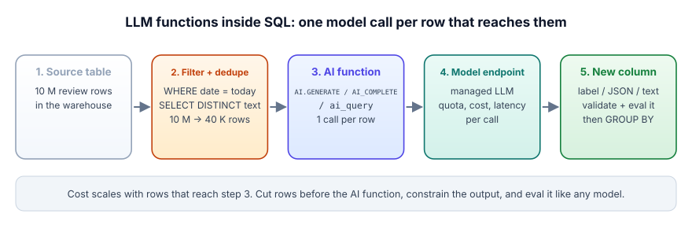

LLM functions inside SQL: the warehouse pattern
BigQuery, Databricks and Snowflake all let you call a language model from inside a SQL query.
You pass a prompt built from a row's columns, and the answer comes back as a new column.
On BigQuery the function is AI.GENERATE, on Snowflake AI_COMPLETE, and on Databricks ai_query.
The catch: the model runs once for every row that reaches the function, and you pay per call.
So filter and remove duplicates first, ask for a fixed answer shape, and check the answers.
An AI function in SQL is like hiring a reader who charges per page. You can hand them the whole library, or you can first throw out the duplicate copies and the pages you already read last week. The reader is equally good either way; your bill is not.
| In the picture | In the real system |
|---|---|
| The reader who charges per page | The hosted model behind AI.GENERATE, AI_COMPLETE or ai_query |
| Each page you hand over | Each row that reaches the AI function: one model call |
| Throwing out the duplicate copies | SELECT DISTINCT on the text before the function runs |
| Skipping pages read last week | An incremental job: only new or changed rows |
| Keeping the reader's notes in a file | Materialising the AI column in a table, never a view |
Where the picture breaks. A human reader would notice the duplicates and tell you; the warehouse will happily pay for every one.
Set the rows, the share of distinct texts and the number of AI columns. Calls and cost are computed both ways; the Lab 10 preset reproduces the lab's 12 AI cells and 10 calls.
Going deeper
BigQuery, Databricks and Snowflake all let you call a language model from a SELECT. For a data engineer this is the fastest way to ship GenAI: no service to deploy, no data leaving the warehouse, the same governance you already have. It is also the fastest way to run up a bill, because the model runs once per row. This lesson is the shared mental model; the next three are each platform.
An AI function is a SQL function whose body is a call to a hosted model. You pass a prompt built from column values, and you get back text, a label, an embedding or a JSON object as a new column. On BigQuery it is AI.GENERATE, on Snowflake AI_COMPLETE, on Databricks ai_query. The warehouse handles batching, retries and quotas; you handle three things the warehouse cannot: which rows reach the function, what shape the answer must have, and whether the answers are right.

Why this pattern is worth learning first
Most GenAI work inside a data team is not chatbots. It is enrichment: classify 2 M support tickets, pull fields out of contract text, tag product reviews by issue, summarise call transcripts for a dashboard. That is batch work over tables, which is exactly what a warehouse is built for. Writing it as SQL means it runs on your schedule (a dbt model, a scheduled query, a Workflow), lands in a governed table, and inherits row and column access control.
DuckDB lets you register a Python function as a SQL function, so we can build the same thing on a laptop. Lab 10 does exactly this; the core is three lines:
con.create_function("ai_classify", ai_classify, ["VARCHAR", "VARCHAR"], "VARCHAR")
SELECT sku, ai_classify(review, 'positive,negative,mixed') AS sentiment, COUNT(*)
FROM (SELECT DISTINCT sku, review FROM reviews WHERE review_date = current_date)
GROUP BY ALL;Two habits are already in that query. SELECT DISTINCT runs before the AI function, so a review pasted twice costs one call. And ai_classify maps the model's free text onto the allowed labels (anything else becomes unknown), so a chatty answer can never leak into a label column and break the GROUP BY.
Assumptions (a scenario, not a real company): 12 M historical reviews, 25% exact duplicates, 60,000 new reviews a day; each prompt is about 120 input tokens and the label about 5 output tokens. For a price we use Claude Haiku 5.5 list price, checked 2026-11-03: from $0.10 per million input tokens and $0.50 per million output tokens. Your warehouse's model prices will differ; the arithmetic will not.
- Naive back-fill. 12 M calls x 120 tokens = 1.44 B input tokens = $144, plus 12 M x 5 = 60 M output tokens = $30. About $174 once.
- Dedupe first. 25% duplicates leaves 9 M distinct texts: $130. Small saving, but it also cuts runtime by a quarter.
- The real trap: a view. If the AI column is a view and 40 dashboards each scan it 5 times a day, that is 200 full passes: 200 x $174 = $34,800 a day. Materialise the column once.
- Daily incremental. 60,000 new reviews, about 45,000 after dedupe: 45,000 x 125 tokens = 5.6 M tokens: 45,000 x 120 x $0.10/M + 45,000 x 5 x $0.50/M = about $0.65 a day.
- Runtime. If your quota allows, say, 500 calls a second, the 9 M back-fill takes 9,000,000 / 500 = 18,000 s, 5 hours. Plan it as a one-off job, not part of the nightly run.
The lesson: the model choice moves cost by a factor of a few; where you put the AI function (view vs table, before vs after dedupe) moves it by a factor of thousands.
The three levers you control
| Lever | What to do | Why |
|---|---|---|
| Rows in | Filter to new or changed rows, dedupe identical text, sample for exploration | Cost and runtime are linear in rows that reach the function |
| Shape out | Ask for a label from a fixed list or JSON with a schema (output_schema, response_format, responseFormat) | Free text in a column is unqueryable and drifts between runs |
| Trust | Keep a labelled sample, re-score it whenever the prompt or model changes, log failed rows | An AI column is model output; a wrong label looks exactly like a right one |
- All three warehouses expose an LLM-in-SQL function:
AI.GENERATE,AI_COMPLETE,ai_query. - It runs once per row that reaches it: filter and dedupe before, never after.
- Constrain the output to a label set or schema, and map anything else to a sentinel like
unknown. - Decide row-level error handling up front: by default one failing row can fail the statement (each platform has a switch to return NULL or an error object instead).
- Treat the new column like any model output: a labelled eval sample and a re-check on every prompt or model change.
You need sentiment for 12 M reviews, of which about 3 M are exact duplicates and only 50 K arrive each day. What is the best first design?
The AI column sometimes contains "The sentiment is positive." instead of "positive". What fixes this at the source?
Which of these belongs BEFORE the AI function in the query, not after?
1. Your enrichment query takes 3 hours. Name two changes that shorten it without touching the model.
2. Write the shape of a labelled eval table for an "issue category" AI column. What columns does it need?
3. When would you NOT use an in-SQL AI function and deploy a service instead?
▸ Show solutions & reasoning
1. Process only new or changed rows (incremental, keyed by an id and updated-at), and dedupe identical text so each distinct prompt is sent once. If the platform supports it, also shorten the prompt: input tokens cost time as well as money.
2. row_id, text, human_label, labelled_by, labelled_at, plus for each scoring run prompt_version, model, predicted_label, run_at. That lets you compute accuracy per prompt and model version, and see exactly which rows changed when you upgrade.
3. When you need low latency per request (a user waiting on a chat answer), multi-step agent logic with tools, streaming, or a model the warehouse cannot reach. AI functions are for batch enrichment over tables; interactive apps belong in a service (Track 12).
At a million rows, some calls will fail: rate limits, a blocked response from a safety filter, a timeout. The platforms differ in the default. On Snowflake, an AI_COMPLETE statement stops at the first failing row unless you enable error handling for the session, after which it can return NULL or an error object per row (Snowflake docs). As of 2026-11-03 a pending behaviour change (BCR-2184, bundle 2026_02) switches most AI functions to return NULL on failure by default (release note), so the default depends on whether your account has that bundle. Databricks ai_query has failOnError; set it to false and you get a struct with the response and an error message (Databricks docs). BigQuery AI.GENERATE returns NULL in the result when a request fails or is blocked (BigQuery docs).
Design for it: write results to a table keyed by row id with a status column, re-run only the failed ids, and alert when the failure rate crosses a threshold. That makes the job idempotent: running it twice never double-charges you for rows that already succeeded.
labs/10_ai_sql_udf.pyFree and offline once set up: Ollama with qwen2.5:7b, plus the packages in labs/README.md. From the course folder:
python labs/10_ai_sql_udf.pyWhat to look for: Section 1 prints llm_calls and cache_hits for 6 rows and 2 AI columns: review 6 duplicates review 1, so two calls are saved. Section 2 aggregates the AI column with GROUP BY and costs nothing extra because identical prompts hit the cache. Add 20 duplicate rows to the reviews table and watch llm_calls stay flat while rows grow.
Small samples: these labs use 5 to 20 cases so they run in minutes on a laptop. Where they report a rate, they print n and a 95% Wilson interval. Read them as a demonstration of the mechanism, not as a measured rate for your system; for that you need hundreds of cases and several seeds.
▸ Recorded output (our run, 2026-11-03, qwen2.5:7b on a laptop GPU)
(2, Decimal('0.380'), 'Jar lid cracked in a week, customer care never called back.')
(3, Decimal('0.108'), 'Kettle is okay. Boils fast but the handle gets hot.')
4) The same pattern on your platforms (needs your account - free trial / free tier)
-- BigQuery (AI.GENERATE, docs read 2026-11-03)
SELECT review_id, AI.GENERATE(CONCAT('Classify sentiment as positive, negative or mixed: ', review)).result AS sentiment
FROM `my_project.shop.reviews`;
-- Snowflake Cortex (AI_COMPLETE)
SELECT review_id, AI_COMPLETE('claude-haiku-4-5', 'Classify sentiment as positive, negative or mixed: ' || review) AS sentiment
FROM shop.reviews;
-- Databricks SQL (ai_query)
SELECT review_id, ai_query('system.ai.meta-llama-3-3-70b-instruct', CONCAT('Classify sentiment as positive, negative or mixed: ', review)) AS sentiment
FROM shop.reviews;
Model and endpoint names change often: check the current list in each doc page before you run these.
{"llm": 10, "cache_hits": 8}Your numbers will differ a little run to run. Full log: labs/outputs. Source: labs/10_ai_sql_udf.py.
Warm-up. A table has 2 M rows and you add two AI columns. How many model calls does a full refresh make, and how many if 30% of the texts are duplicates and you dedupe first?
▸ Solution
Two columns means two calls per row: 2 M x 2 = 4 M calls. After dedupe 1.4 M distinct texts x 2 = 2.8 M calls. The saving is exactly the duplicate fraction, applied to every AI column.
Transfer. Design a dbt-style incremental model for an AI label column. What is the key, what triggers a re-label, and where do you store the prompt version?
▸ Solution
Key on the source row id (or a hash of the text if many rows share text). Re-label when the text changes (compare a hash) or when you deliberately bump the prompt or model version. Store prompt_version and model as columns next to the label, so a version bump selects exactly the rows to redo and you can compare old vs new labels on your eval sample before switching.
Stretch. Your AI label column feeds a revenue dashboard. How do you make sure a silent change in the provider's default model does not shift the numbers?
▸ Solution
Pin the model or endpoint explicitly instead of relying on a default (BigQuery picks a recent stable Gemini when no endpoint is given, per its docs). Keep a labelled sample of a few hundred rows and score it on every run; alert when accuracy or the label distribution moves beyond a threshold. Version the prompt, log model and prompt per row, and treat a model change as a deploy with an eval gate.
Junior What is an AI function in a data warehouse, and why would a data team use one?
▸ Model answer
It is a SQL function that calls a hosted language model for each row, for example AI.GENERATE in BigQuery, AI_COMPLETE in Snowflake or ai_query in Databricks. Data teams use it for batch enrichment such as classifying tickets or extracting fields, because it runs where the data lives, on the existing scheduler, with the existing access controls, and lands results in a table analysts can query.
Mid An AI enrichment job costs ten times what you estimated. Where do you look first?
▸ Model answer
Count how many calls it actually made versus rows you expected. The usual causes: the AI function sits in a view or a CTE that is re-evaluated by many queries; it runs before filters and dedupe; a retry loop resends the whole table; or prompts are far longer than planned because a big text column was concatenated in. Fix by materialising, filtering and deduping before the call, trimming the prompt, and making retries row-level.
Senior How would you govern AI columns across a company's warehouse?
▸ Model answer
Treat each AI column as a model in production. Require a pinned model or endpoint, a versioned prompt, row-level lineage (prompt version, model, run id), and a labelled eval sample with an accuracy threshold before the column is used in reporting. Put cost guardrails in place: incremental processing, quotas per job, and alerts on call volume. Use the platform's access controls so only approved roles can call models, and document which columns are model-generated so consumers know they carry error rates.
Same pattern, three dialects. Next: BigQuery and Gemini, where retrieval, embeddings and generation all live in SQL.
In one line: The model runs once per row it sees, so cut the rows before you call it and store the answer in a table.